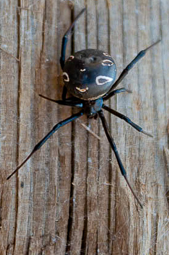

Que réellement craindre des “Kara Kurt”?
Si vous voyagez dans la région du Manghystau, vous ne passerez pas à coté des innombrables mise en garde des locaux envers cette araignée qu’ils nomment “Kara Kurt” (loup noir en turc). Tous la diront mortelle, certain iront même jusqu’à précisé que la mort survient en 10 minutes. Bien qu’un peu septique on était plutôt inquiet surtout après en avoir retrouvé une, un matin, dans notre tente. Cependant notre inquiétude c’est visite dissipée aprés un check sur internet. Killian a trouvé un journal local ayant donné le nom scientifique de cette sympathique petite bébête et s’est donc empresser de la “wikipédier”.
Il s’est avéré qu’il sagit d’araignées aussi connues sous nos latitudes sous le nom de veuves noires d’Europe(tredecimguttatus Latrodectus). Bien que leurs morsures ne soient que très exceptionnellement mortelles elles restent sympathique jugez par vous-même (source Norbert VERNEAU):
- >Morsure généralement indolore, qui peut même passer inaperçue ;
- Une à trente minutes plus tard, des douleurs sourdes s’étendent progressivement de la morsure à tout le membre mordu, puis à tout le corps, rappelant pour ceux qui l’ont “expérimenté” à une piqûre d’un poisson, la vive (Famille des Trachinidae, genres Trachinus et Echiichthys) ;
- Cette douleur s’accompagne progressivement de contractions des muscles thoraciques, abdominaux et faciaux, parfois aussi ces contractions musculaires sont localisées au membre mordu ;
- Une anxiété, tournant parfois à la sensation d’oppression, à l’angoisse, à la peur profonde et irraisonnée de mourir, apparaît lentement et peut durer plusieurs semaines, s’aggravant dans certains cas de troubles psychiques plus sérieux (confusion mentale, cauchemars à répétition) ;
- Deux ou trois jours plus tard, les ganglions lymphatiques sont sensibles au toucher, et la victime voit apparaître des éruptions cutanées très variables quant à leur aspect et perd plusieurs kilogrammes ;
- Plus tard, en une à trois semaines (sans traitement) tous ces signes régressent et disparaissent, laissant la personne très affaiblie et fatiguée pendant encore plusieurs semaines.
Ces araignées pullulent dans l’ouest du Kazakhstan, dans les régions bordant la mer Caspienne. Il convient donc d’être prudent lorsqu’on s’assoit et surtout lorsqu’on remet son sac à dos sur ses épaules. En effet, ces petites bêtes semble apprécier les recoins qu’offrent les sacs à dos et y confectionnent volontier de petites toiles durant la nuit.